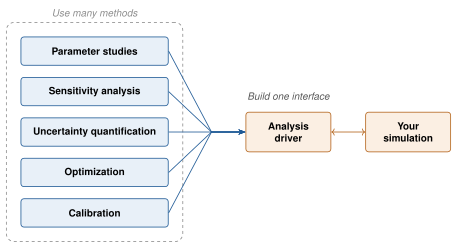

Dakota 7.0
The Dakota project delivers both state-of-the-art research and robust, usable software for optimization and uncertainty quantification (UQ). Dakota enables outer-loop analyses, such as optimization, UQ, sensitivity analysis and calibration. Its flexible interfacing structure lets you connect a wide range of simulation codes to Dakota, from black-box executables to Python functions. Build one interface to your code, called an analysis driver, and every Dakota method can use it.

Fig. 1 One analysis driver connects your simulation to every Dakota method.
Start here
New to Dakota? Read the Getting Started pages in order: What is Dakota?, Anatomy of a Dakota Study, Tutorial: Your First Dakota Study, and then Connecting Your Code: The Analysis Driver.
Installing Dakota? See Download and Install Dakota.
Already using Dakota? Go to the Keyword Reference, Study Types, Examples or Release Notes.
Get help
Ask questions, report bugs and request features on Dakota’s GitHub Discussions page. Help Resources also lists video screencasts and training materials.
Cite Dakota
If you use Dakota in your work, please cite it as described in Citing Dakota.
Install
Getting Started with Dakota
Using Dakota
Building and Developing Dakota